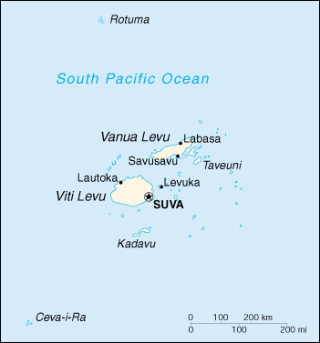

|
Fiji | |
| Introduction Geography People Government Economy Communications Transportation Military Transnational Issues | ||
|  | ||
| Fiji | Introduction | Top of Page |
| Background: | Fiji became independent in 1970, after nearly a century as a British colony. Democratic rule was interrupted by two military coups in 1987, caused by concern over a government perceived as dominated by the Indian community (descendants of contract laborers brought to the islands by the British in the 19th century). A 1990 constitution favored native Melanesian control of Fiji, but led to heavy Indian emigration; the population loss resulted in economic difficulties, but ensured that Melanesians became the majority. Amendments enacted in 1997 made the constitution more equitable. Free and peaceful elections in 1999 resulted in a government led by an Indo-Fijian, but a coup in May of 2000 ushered in a prolonged period of political turmoil. New elections are scheduled for August 2001. |
| Fiji | Geography | Top of Page |
| Location: | Oceania, island group in the South Pacific Ocean, about two-thirds of the way from Hawaii to New Zealand |
| Geographic coordinates: | 18 00 S, 175 00 E |
| Map references: | Oceania |
| Area: |
total:
18,270 sq km
land: 18,270 sq km water: 0 sq km |
| Area - comparative: | slightly smaller than New Jersey |
| Land boundaries: | 0 km |
| Coastline: | 1,129 km |
| Maritime claims: |
measured from claimed archipelagic baselines
continental shelf: 200-m depth or to the depth of exploitation; rectilinear shelf claim added exclusive economic zone: 200 NM territorial sea: 12 NM |
| Climate: | tropical marine; only slight seasonal temperature variation |
| Terrain: | mostly mountains of volcanic origin |
| Elevation extremes: |
lowest point:
Pacific Ocean 0 m
highest point: Tomanivi 1,324 m |
| Natural resources: | timber, fish, gold, copper, offshore oil potential, hydropower |
| Land use: |
arable land:
10%
permanent crops: 4% permanent pastures: 10% forests and woodland: 65% other: 11% (1993 est.) |
| Irrigated land: | 10 sq km (1993 est.) |
| Natural hazards: | cyclonic storms can occur from November to January |
| Environment - current issues: | deforestation; soil erosion |
| Environment - international agreements: |
party to:
Biodiversity, Climate Change, Climate Change-Kyoto Protocol, Desertification, Endangered Species, Law of the Sea, Marine Life Conservation, Nuclear Test Ban, Ozone Layer Protection, Tropical Timber 83, Tropical Timber 94
signed, but not ratified: none of the selected agreements |
| Geography - note: | includes 332 islands of which approximately 110 are inhabited |
| Fiji | People | Top of Page |
| Population: | 844,330 (July 2001 est.) |
| Age structure: |
0-14 years:
32.92% (male 141,724; female 136,216)
15-64 years: 63.52% (male 268,411; female 267,871) 65 years and over: 3.56% (male 14,007; female 16,101) (2001 est.) |
| Population growth rate: | 1.41% (2001 est.) |
| Birth rate: | 23.33 births/1,000 population (2001 est.) |
| Death rate: | 5.75 deaths/1,000 population (2001 est.) |
| Net migration rate: | -3.45 migrant(s)/1,000 population (2001 est.) |
| Sex ratio: |
at birth:
1.05 male(s)/female
under 15 years: 1.04 male(s)/female 15-64 years: 1 male(s)/female 65 years and over: 0.87 male(s)/female total population: 1.01 male(s)/female (2001 est.) |
| Infant mortality rate: | 14.08 deaths/1,000 live births (2001 est.) |
| Life expectancy at birth: |
total population:
68.25 years
male: 65.83 years female: 70.78 years (2001 est.) |
| Total fertility rate: | 2.86 children born/woman (2001 est.) |
| HIV/AIDS - adult prevalence rate: | 0.07% (1999 est.) |
| HIV/AIDS - people living with HIV/AIDS: | NA |
| HIV/AIDS - deaths: | NA |
| Nationality: |
noun:
Fijian(s)
adjective: Fijian |
| Ethnic groups: | Fijian 51% (predominantly Melanesian with a Polynesian admixture), Indian 44%, European, other Pacific Islanders, overseas Chinese, and other 5% (1998 est.) |
| Religions: |
Christian 52% (Methodist 37%, Roman Catholic 9%), Hindu 38%, Muslim 8%, other 2%
note: Fijians are mainly Christian, Indians are Hindu, and there is a Muslim minority (1986) |
| Languages: | English (official), Fijian, Hindustani |
| Literacy: |
definition:
age 15 and over can read and write
total population: 91.6% male: 93.8% female: 89.3% (1995 est.) |
| Fiji | Government | Top of Page |
| Country name: |
conventional long form:
Republic of the Fiji Islands
conventional short form: Fiji |
| Government type: |
republic
note: military coup leader Maj. Gen. Sitiveni RABUKA formally declared Fiji a republic on 6 October 1987 |
| Capital: | Suva |
| Administrative divisions: | 4 divisions and 1 dependency*; Central, Eastern, Northern, Rotuma*, Western |
| Independence: | 10 October 1970 (from UK) |
| National holiday: | Independence Day, second Monday of October (1970) |
| Constitution: | 10 October 1970 (suspended 1 October 1987); a new constitution was proposed on 23 September 1988 and promulgated on 25 July 1990; amended 25 July 1997 to allow nonethnic Fijians greater say in government and to make multiparty government mandatory; entered into force 28 July 1998; note - the May 1999 election was the first test of the amended constitution and introduced open voting - not racially prescribed - for the first time at the national level |
| Legal system: | based on British system |
| Suffrage: | 21 years of age; universal |
| Executive branch: |
note:
armed ethnic Fijian terrorists, led by George SPEIGHT stormed the Parliament building on 19 May 2000; ethnic Indo-Fijian Prime Minister Mahendra CHAUDHRY and his government were held hostage for 56 days; following the attempted coup, the Commander of the Fiji Military Forces, naval Commodore Frank BAINIMARAMA declared martial law and dissolved the government on 29 May 2000; an interim government, headed by interim Prime Minister Laisenia QARASE, was appointed to serve until a new constitution was initiated and subsequent elections held; in November 2000, Fiji's High Court upheld the 1997 constitution and ruled that Ratu Sir Kamisese MARA remained the president; Justice Anthony GATES concluded that MARA should recall the pre-May 19th Parliament and appoint a prime minister to form a new government; the Fiji Court of Appeals upheld GATES' decision on 1 March 2001; it ruled that the 1997 constitution had not been abrogated, Parliament had not been dissolved, only prorogued for six months, and that the presidency remained vacant since MARA's resignation took effect 15 December 2000; President Ratu Josefa ILOILO reinstated QARASE's interim government as the caretaker government and elections were scheduled for August 2001; approximately 23 fluid political parties are currently jockeying for power
chief of state: President Ratu Josefa ILOILO (since NA 2000); Vice President Jope SENILOLI (since NA 2000) head of government: Prime Minister Laisenia QARASE (since NA 2000); Deputy Prime Minister Epeli NAILATIKAU (since NA 2000) cabinet: Cabinet appointed by the prime minister from among the members of Parliament and is responsible to Parliament; note -there is also a Presidential Council that advises the president on matters of national importance and a Great Council of Chiefs which consists of the highest ranking members of the traditional chiefly system elections: president elected by the Great Council of Chiefs for a five-year term; prime minister appointed by the president election results: Ratu Josefa ILOILO elected president by the Great Council of Chiefs; percent of vote - NA% |
| Legislative branch: |
bicameral Parliament consists of the Senate (32 seats; 14 appointed by the Great Council of Chiefs, nine appointed by the prime minister, eight appointed by the leader of the opposition, and one appointed by the council of Rotuma) and the House of Representatives (71 seats; 23 reserved for ethnic Fijians, 19 reserved for ethnic Indians, three reserved for other ethnic groups, one reserved for the council of Rotuma constituency encompassing the whole of Fiji, and 25 open; members serve five-year terms)
elections: House of Representatives - last held 11 May 1999 (next to be held NA May 2004) election results: House of Representatives - percent of vote by party - NA%; seats by party - Fiji Labor Party 37, others 34 |
| Judicial branch: | Supreme Court (judges are appointed by the president) |
| Political parties and leaders: | Fiji Labor Party or FLP [Mahendra CHAUDHRY]; Fijian Nationalist Federation Party or NFP [Singh RAKKA]; Fijian Political Party or SVT (primarily Fijian) [Maj. Gen. Sitiveni RABUKA]; National Federation Party or NFP (primarily Indian) [Jai Ram REDDY]; United General Party or UGP [David PICKERING] |
| Political pressure groups and leaders: | NA |
| International organization participation: | ACP, AsDB, C, CCC, CP, ESCAP, FAO, G-77, IBRD, ICAO, ICFTU, ICRM, IDA, IFAD, IFC, IFRCS, IHO, ILO, IMF, IMO, Intelsat, Interpol, IOC, ISO (subscriber), ITU, OPCW, Sparteca, SPC, SPF, UN, UNCTAD, UNESCO, UNIDO, UNIFIL, UNIKOM, UNMIBH, UNMIK, UNTAET, UPU, WFTU, WHO, WIPO, WMO, WToO, WTrO |
| Diplomatic representation in the US: |
chief of mission:
Ambassador (vacant); Charge d'Affaires ad interim Salaseini Lelelvawalu VOSAILAGI
chancery: Suite 240, 2233 Wisconsin Avenue NW, Washington, DC 20007 telephone: [1] (202) 337-8320 FAX: [1] (202) 337-1996 |
| Diplomatic representation from the US: |
chief of mission:
Ambassador Osman M. SIDDIQUE
embassy: 31 Loftus Street, Suva mailing address: P. O. Box 218, Suva telephone: [679] 314466 FAX: [679] 300081 |
| Flag description: | light blue with the flag of the UK in the upper hoist-side quadrant and the Fijian shield centered on the outer half of the flag; the shield depicts a yellow lion above a white field quartered by the cross of Saint George featuring stalks of sugarcane, a palm tree, bananas, and a white dove |
| Fiji | Economy | Top of Page |
| Economy - overview: | Fiji, endowed with forest, mineral, and fish resources, is one of the most developed of the Pacific island economies, though still with a large subsistence sector. Sugar exports and a growing tourist industry are the major sources of foreign exchange. Sugar processing makes up one-third of industrial activity. Roughly 300,000 tourists visit each year, including thousands of Americans following the start of regularly scheduled non-stop air service from Los Angeles. Fiji's growth slowed in 1997 because the sugar industry suffered from low world prices and rent disputes between farmers and landowners. Drought in 1998 further damaged the sugar industry, but its recovery in 1999 contributed to robust GDP growth. Long-term problems include low investment and uncertain property rights. The political turmoil in Fiji has had a severe impact with the economy shrinking by 8% in 1999 and over 7,000 people losing their jobs. The interim government's 2001 budget is an attempt to attract foreign investment and restart economic activity. The government's ability to manage the budget and fulfill predictions of 4% growth for 2001 will depend on a return to stability, a regaining of investor confidence, and the absence of international sanctions (which could cripple Fiji's sugar and textile industry). |
| GDP: | purchasing power parity - $5.9 billion (1999 est.) |
| GDP - real growth rate: | -8% (1999 est.) |
| GDP - per capita: | purchasing power parity - $7,300 (1999 est.) |
| GDP - composition by sector: |
agriculture:
16%
industry: 30% services: 54% (1999 est.) |
| Population below poverty line: | NA% |
| Household income or consumption by percentage share: |
lowest 10%:
NA%
highest 10%: NA% |
| Inflation rate (consumer prices): | 0% (1999 est.) |
| Labor force: | 235,000 |
| Labor force - by occupation: | subsistence agriculture 67%, wage earners 18%, salary earners 15% (1987) |
| Unemployment rate: | 6% (1997 est.) |
| Budget: |
revenues:
$610 million
expenditures: $501 million, including capital expenditures of $NA (1999 est.) |
| Industries: | tourism, sugar, clothing, copra, gold, silver, lumber, small cottage industries |
| Industrial production growth rate: | 2.9% (1995) |
| Electricity - production: | 510 million kWh (1999) |
| Electricity - production by source: |
fossil fuel:
17.65%
hydro: 82.35% nuclear: 0% other: 0% (1999) |
| Electricity - consumption: | 474.3 million kWh (1999) |
| Electricity - exports: | 0 kWh (1999) |
| Electricity - imports: | 0 kWh (1999) |
| Agriculture - products: | sugarcane, coconuts, cassava (tapioca), rice, sweet potatoes, bananas; cattle, pigs, horses, goats; fish |
| Exports: | $537 million (f.o.b., 1999) |
| Exports - commodities: | sugar, garments, gold, timber, fish |
| Exports - partners: | Australia 33.1%, US 14.8%, UK 13.8%, other Pacific island countries 8.8%, NZ 4.5%, Japan 4.5% (1999) |
| Imports: | $653 million (f.o.b., 1999) |
| Imports - commodities: | manufactured goods, machinery and transport equipment, petroleum products, food, chemicals |
| Imports - partners: | Australia 41.9%, US 14%, NZ 13.3%, Japan 4.8%, Taiwan 1.9% (1999) |
| Debt - external: | $193 million (1998) |
| Economic aid - recipient: | $40.3 million (1995) |
| Currency: | Fijian dollar (FJD) |
| Currency code: | FJD |
| Exchange rates: | Fijian dollars per US dollar - 2.1814 (January 2001), 2.1286 (2000), 1.9696 (1999), 1.9868 (1998), 1.4437 (1997), 1.4033 (1996) |
| Fiscal year: | calendar year |
| Fiji | Communications | Top of Page |
| Telephones - main lines in use: | 72,000 (1997) |
| Telephones - mobile cellular: | 5,200 (1997) |
| Telephone system: |
general assessment:
modern local, interisland, and international (wire/radio integrated) public and special-purpose telephone, telegraph, and teleprinter facilities; regional radio communications center
domestic: NA international: access to important cable links between US and Canada as well as between NZ and Australia; satellite earth station - 1 Intelsat (Pacific Ocean) |
| Radio broadcast stations: | AM 13, FM 40, shortwave 0 (1998) |
| Radios: | 500,000 (1997) |
| Television broadcast stations: | NA |
| Televisions: | 21,000 (1997) |
| Internet country code: | .fj |
| Internet Service Providers (ISPs): | 2 (2000) |
| Internet users: | 7,500 (2000) |
| Fiji | Transportation | Top of Page |
| Railways: |
total:
597 km; note - belongs to the government-owned Fiji Sugar Corporation
narrow gauge: 597 km 0.610-m gauge (1995) |
| Highways: |
total:
3,440 km
paved: 1,692 km unpaved: 1,748 km (1996) |
| Waterways: |
203 km
note: 122 km navigable by motorized craft and 200-metric-ton barges |
| Ports and harbors: | Lambasa, Lautoka, Levuka, Savusavu, Suva |
| Merchant marine: |
total:
6 ships (1,000 GRT or over) totaling 11,870 GRT/14,787 DWT
ships by type: chemical tanker 2, passenger 1, petroleum tanker 1, roll on/roll off 1, specialized tanker 1 (2000 est.) |
| Airports: | 27 (2000 est.) |
| Airports - with paved runways: |
total:
3
over 3,047 m: 1 1,524 to 2,437 m: 1 914 to 1,523 m: 1 (2000 est.) |
| Airports - with unpaved runways: |
total:
24
1,524 to 2,437 m: 1 914 to 1,523 m: 4 under 914 m: 19 (2000 est.) |
| Fiji | Military | Top of Page |
| Military branches: | Republic of Fiji Military Forces (RFMF; includes ground and naval forces) |
| Military manpower - military age: | 18 years of age |
| Military manpower - availability: | males age 15-49: 227,599 (2001 est.) |
| Military manpower - fit for military service: | males age 15-49: 125,238 (2001 est.) |
| Military manpower - reaching military age annually: | males: 9,471 (2001 est.) |
| Military expenditures - dollar figure: | $24 million (FY98) |
| Military expenditures - percent of GDP: | 1.1% (FY98) |
| Fiji | Transnational Issues | Top of Page |
| Disputes - international: | none |
{kind=link}